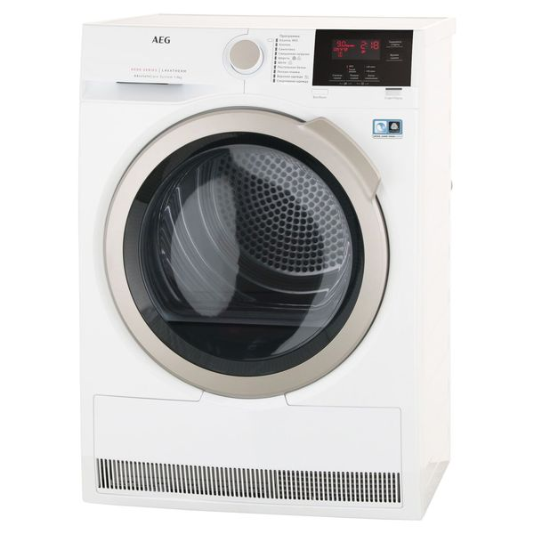

Сушильная машина AEG 8000 Series T8DBG49SR

Цена - 74490 ₽
Характеристики товара
Объем барабана - 118 л
Тип управления - электронный
Сушка по таймеру - да
Загрузка при сушке (хлопок) - 9 кг
Загрузка при сушке (синт.) - 3.5 кг
Габаритные размеры (В*Ш*Г) - 850*596*663
Описание товара:
Сушильная машина AEG 8000 Series T8DBG49SR – удобный вариант для большой семьи. Она вмещает 9 кг хлопкового белья, так что вы сможете за один раз загрузить, например, несколько комплектов постельных принадлежностей.
Подробное описание товара:
Аппарат бережно обращается с тканями любых типов, за это отвечает система AbsoluteCare. Она контролирует алгоритм движений и температуру в барабане, позволяя сушить и тонкую шесть, и верхнюю одежду с мембраной, и синтетические вещи, не рискуя повредить их. А функция «Антисминание» поможет избежать серьёзных складок и заломов и облегчит последующее глажение. У устройства электронная панель управления с большим дисплеем, на котором отображаются все параметры работы. Вы сможете выбирать степень остаточной влажности, в зависимости от того, собираетесь ли утюжить вещи, или сразу убрать их в шкаф. Есть и сушка по времени. Таймер отложенного старта даст возможность запустить машину в удобные часы, например, в период действия самых дешёвых тарифов на электроэнергию. Благодаря технологии SensiDry влага удаляется из волокон материалов при более низкой температуре, чем в других аналогичных приборах. Это позволяет избежать перегрева ткани и расходовать меньше электроэнергии. AEG T8DBG49SR присвоен соответствующий класс А. «Совершенство формы и функционала» – философия AEG. Вот уже 130 лет фирма неустанно следует ей, постоянно улучшая свою продукцию и создавая новую. Инновации – вот чем славится бренд. Его инженеры заглядывают в грядущее, уже сегодня создавая приборы, которые будут полезны и функциональны завтра. С техникой AEG вы всегда будете на шаг ближе к будущему.